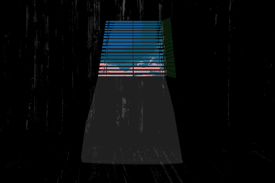
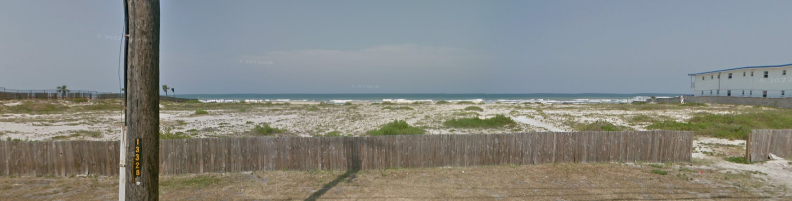

It's morning, I'm at the table in the kitchen while everyone's getting ready to go to the beach.
And I like the beach, but I've always been afraid of going into the ocean, or past the shore.
I don't think I do much, I just like going because we all like to go.
There's seaweed on the shore that.. I hate the feeling of stepping in, and we pretty much have to pass a long stretching area of it each time we enter.
I really, really don't like the feeling of it.
But besides that, I like the beach.
I just have to get ready to go.
So you get ready, you get together your things, you're gonna need a few things for this
What do you usually take with you?
Normal things to bring for the beach for a 3 year old
A , some , and a .
You'll need : Mom's got that taken care of.
What else would you like to bring?
What matters to you?
Whatever it was, you couldn't remember it
While getting ready you tried, and you couldn't find it as you looked
You feel uneasy
Like the feeling spreads
Father: "Hey , we gotta go soon!"
Am I forgetting something?
What mattered most?
Father: "What are you standing around for?"
Did I lose it?
I...?
What was I doing?
You're standing in your room

Father: Bye!
What? No wait sorry I ready!
Father: We're not waiting on you!
(...)
(...)
You stand there, debating if you still want to go
You hear your family's footsteps leaving the house from the door, talking outside. As the voices slowly draw away, you sprint to the door with your things.
You still feel like you're still forgetting something
Like a part of you is missing
But time's up
You're outside now, trying to catch up to them, they've already turned from the end of the front walkway onto the sidewalk; going right.
Wait!
You feel scared without it
You took it everywhere with you
It's like a part of you is missing
WAIT!
You run
You don't want to be alone right now
Father: Come on catch up! Tough love!
You speed across the sidewalk as fast as you can
Mom: Would you stop that, wait for them.
Father: What they're right here, just had to let em know life doesn't stop to wait!
Mom: We're supposed to have a fun day today, you can't do that to them.
HEY! Uh guys?
Mom: -Yes sweetie?
...
I'm here -what's going on
Father: just your mom being a fun cop again
Father: We're gonna have a good time don't worry kiddo
Mom: ...
Okay! Yeah mom don't worry about me!
I'm a big kid!
Mom: ...
She has to put on a smile, but her love for you is genuine
Mom: You're gonna ride the big waves?
Yeah!
Awesomesauce! I got yours and 's surfboards here with me
Do you want to hold yours? I can take your buckets instead.
Okay!
You exchange your buckets for your board; which you hold in your arm. Of course your towel has been over a shoulder. You're dressed like you're ready to go swimming.
You and your family continue walking along the sidewalk together.
You're nearly to the edge of the street, meaning you'll have to cross it.
You notice the area is especially loud and busy, many cars zoom past,
Joys of the city life.
They're gonna stop for us right?
Mom: Yeah
Father: Stay close, you two. See this is why I wanted to leave earlier.
You don't realize it yourself but your parents do; there's no crosswalk here, you're all gonna have to wait for an open opportunity to cross.
You as a family do this all the time so you're no stranger to doing so each time you want to get to the beach.
You collectively wait for the cars to stop coming, it takes a bit. Mom picks you up, Father picks up your sibling.
Then they swiftly cross the road to get to the other side.
On the other side there's a fence near the sidewalk, there's an opening you all have to walk to.
Once Mom and Father reach it, they put the two of you down.

: I'm so brave! I could've walked across it myself and you know it!
Father: You tell 'er
Mom: Noo, um, you can't yet... That's too dangerous.
Father: You heard 'er
: Haha you just think I'm weak
Mom: Nooo haha,
: I wanna walk across the road on the way back!
Mom: I... we'll see sweetie.
Father: Alright you two can go in now, we'll be right in.
Okay!
: Okay!
Mom: Wait wait, their sunscreen.
Your sibling's already bolted through the gate, now in the weeds of seaweed on the outer part which you don't like stepping in
You realize you're still standing here, you know it's okay to go but you're not sure. You do need sunscreen.
Father: Oh right yeah let's just go in together.
Father can you carry me across the stabby bits there
Father: .. You ask this every time, you're a big kid, you're gonna have to get over your fear eventually.
What fear? I'm not scared. I just don't like it
I'm not- ... Please?
Father: Sure but on the way back you gotta go through.
He picks you up, both him and Mom walk. And he carries you through the outer area to where the beach sand is softer.
... Sorry, you can put me down.
Father: Here let's just set up and I'll get you your things from Mom.
He sets you down, you bring your attention away from him as he walks over to Mom who's began setting things up.
You see your sibling's already messing about on the shore with the little waves.